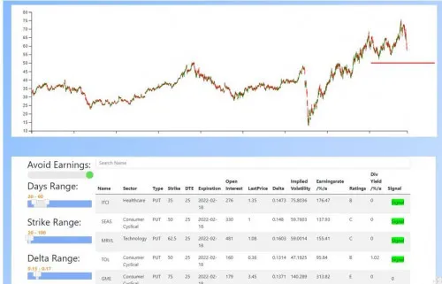

Option Screener Basic
Produktprofil · Marktplatz-Daten 2026-10-14 · Verkaufsseiten-Recherche 2026-10-14 · Kategorien: Finances
- Option Screener Basic ist ein/e Mitgliederbereich & Videokurs in Finances, vertrieben über den Digistore24-Marktplatz von Anbieter mc_fireman, gelistet seit 2022-01-25.
- Listenpreis $469.15 (subscription) — Checkout, Auslieferung und Rückerstattungen laufen über Digistore24 selbst, nicht über den Anbieter.
- Käuferschutz: keine standardisierte Garantie-Formulierung gefunden — Rückerstattungsbedingungen vor der Zahlung auf der offiziellen Seite prüfen.
Interesse an Option Screener Basic? Aktueller Preis, Boni und Garantiebedingungen finden Sie auf der offiziellen Seite des Anbieters:
Offizielle Verkaufsseite ansehen
Affiliate-Link (Werbung) — wir verdienen ggf. eine Provision, ohne Mehrkosten für Sie.

Marktplatz-Daten
| Produkttyp | Mitgliederbereich & Videokurs |
|---|---|
| Preis | $469.15 (Subscription) |
| Garantie/Rückgabe | Laut Verkaufsseite des Anbieters — vor dem Kauf auf der offiziellen Seite prüfen |
| Anbieter | mc_fireman (gelistet seit 2022-01-25) |
Marktplatz-Beschreibung des Anbieters
Dieses Produkt erlaubt Ihnen Cash Secured Puts zu scannen. Sie erhalten aus über 1.000.000 Optionsketten, die täglich wechseln Handelssignale, die auch durch Sie angepasst werden können. Es können die Optionszeiträume, die Strike Preise und das Delta angepasst werden. Auch lange erprobte Handelssignale stehen zur Verfügung. Diverse Filter erlauben Ihnen extrem schnell Scanergebnisse zu erhalten. Alle Daten beziehen sich auf Tagesendpreise des vergangenen Handelstages und werden über Nacht aktualisiert
Von der Verkaufsseite des Anbieters
Seitentitel: Tradesscanner
Abschnitts-Überschriften
- Option Screener Basic
- TradesScanner Option Screener Basic - der einfache Einstieg in den Optionshandel
Einstiegstext
Mit dem Option Screener Basic bietet der TradesScanner ein zentrales Werkzeug, das den Auswahlprozess von Aktienoptionen deutlich vereinfacht. Bisher war es oft nötig, Aktien zunächst separat zu filtern, mögliche Strategien zu definieren und dann in der Brokersoftware mühsam geeignete Optionsketten zu vergleichen. Dieser zeitraubende Prozess wird mit dem Option Screener auf wenige Klicks reduziert.
Der Screener liefert eine klare Auswahl an Chancen, basierend auf praxisnahen Kriterien wie:
Damit lassen sich z. B. Strategien wie ein Bull Put Spread effizient vorbereiten und direkt bewerten.
Ein Klick auf den Basiswert öffnet den Chart mit relevanten Daten und Open-Interest-Bereichen. So können Trader ihre Strategie sofort anpassen und direkt beim Broker umsetzen - schnell, übersichtlich und auf Basis verlässlicher Signale.
CTA-Buttons: „Buy Now"
Recherche-Methode: rohes HTML · 730 Wörter · Qualität: medium · recherchiert am 2026-10-14. Vollständige Recherche-Datei (MD) ↗
Anwendung — laut Anbieter
Trader, die für ihre ersten Schritte professionelle Unterstützung suchen
Weitere Bilder (von der Verkaufsseite des Anbieters)
Bilder stammen von der offiziellen Verkaufsseite des Anbieters und zeigen das Produkt, wie es beworben wird.
Gut zu wissen
- Hoher Preis: $469.15 ist eine erhebliche Ausgabe — prüfen Sie, ob es einen Zahlungsplan gibt, und vergleichen Sie zuerst die günstigeren Alternativen der Kategorie.
- Keine Garantie-Formulierung in unserer Recherche gefunden — bestätigen Sie das Rückgabefenster auf der offiziellen Seite, bevor Sie kaufen.
Was ist Option Screener Basic?
Option Screener Basic ist ein/e mitgliederbereich & videokurs in der Kategorie Finanzen des Digistore24-Marktplatzes, veröffentlicht von Anbieter mc_fireman und im Verkauf seit 2022-01-25. Der Anbieter beschreibt es so: "Dieses Produkt erlaubt Ihnen Cash Secured Puts zu scannen. Sie erhalten aus über 1.000.000 Optionsketten, die täglich wechseln Handelssignale, die auch durch Sie angepasst werden können. Es können die Optionszeiträume, die Strike Preise und das Delta angepasst" (Marktplatz-Beschreibung des Anbieters, leicht gekürzt).
Option Screener Basic Preis: was Sie zahlen
Der Marktplatz listet Option Screener Basic zum $469.15 Preis (subscription). Digistore24 fügt im Checkout die gesetzliche Steuer Ihres Landes hinzu — dort sehen Sie den Endbetrag vor der Zahlung. Eine separate Plattformgebühr gibt es nicht; Anbieter können eigene Upsells nach dem Checkout anbieten.
Option Screener Basic Rückerstattung und Geld-zurück-Garantie
Wir haben keine standardisierte Garantie-Formulierung auf der Verkaufsseite gefunden. Rückerstattungen für Digistore24-Käufe laufen über die Plattform: Antrag über den Support-Link in Ihrer Bestell-E-Mail, innerhalb des Garantiezeitfensters, das im Checkout angezeigt wird. Praktischer Rat: Entscheiden Sie innerhalb des Fensters — wenn das Produkt unter den Erwartungen bleibt, erstatten lassen statt irren lassen.
Mechanik im Detail: So funktionieren Digistore24-Rückerstattungen.
Für wen ist Option Screener Basic geeignet?
Basierend auf der Finanzen-Einordnung und der subscription-Abrechnung richtet sich Option Screener Basic an Käufer, die finanzen-Lösungen suchen und ein Budget für einen Premium-Kauf eingeplant haben. Der ehrliche Test ist nicht die Kategorie, sondern Ihre eigene Situation: Werden Sie es realistisch innerhalb des Garantiefensters nutzen? Wenn ja, ist der Preis eine Investition; wenn nein, ist er Ballast — unabhängig von der Qualität.
Ist Option Screener Basic seriös? Was Sie vor dem Kauf prüfen
Wir bewerten keine Seriosität — das kann niemand, ohne das Produkt zu nutzen. Prüfbare Punkte, alle auf dieser Seite: die Marktplatz-Historie des Anbieters (im Verkauf seit 2022-01-25), die wörtlichen Verkaufsseiten-Auszüge unten (gekennzeichnet als Anbieteraussagen — deren Werbung, nicht unsere Empfehlung), die Garantiebedingungen im Checkout und die Auslieferungsart. Vorsichtsignale bei jedem Angebot: Countdown-Dringlichkeit gepaart mit vagen Rückerstattungsbedingungen, Testimonials ohne Datum und Anbieterseiten, die den Preis bis zum Checkout verstecken.
Wie kommen Sie nach dem Kauf an Option Screener Basic?
Der Checkout läuft über Digistore24. Nach der Zahlung: Videokurse laufen über einen Mitgliederbereich: nach dem Checkout erhalten Sie Zugangsdaten per E-Mail und können die Lektionen in Ihrem eigenen Tempo streamen. Bewahren Sie die Bestell-E-Mail auf — sie ist Ihr Schlüssel zum/d zur mitgliederbereich & videokurs, zu Rückerstattungsanträgen und zum Digistore24-Käufersupport.
Option Screener Basic Erfahrungen: so recherchieren Sie richtig
Die meisten „Erfahrungsberichte" zu Marktplatz-Produkten sind Affiliate-Inhalte — einschließlich Seiten wie dieser, die an Käufen mitverdienen. Behandeln Sie jeden Bericht (auch unseren) als Ausgangspunkt und prüfen Sie gegen Primärquellen: die Verkaufsseite des Anbieters, die Digistore24-Rückerstattungsrichtlinie und — für finanzen — unabhängige Communities außerhalb des Affiliate-Ökosystems. Auf dieser Seite sind die Verkaufsseiten-Auszüge unten wörtlich zitiert, damit Sie die Aussagen des Anbieters bewerten können, ohne wegzuklicken.
Wie Sie Option Screener Basic sicher kaufen
- Öffnen Sie die offizielle Verkaufsseite und lesen Sie das vollständige Angebot.
- Bestätigen Sie Endpreis und Garantiezeitfenster auf der Digistore24-Kassenseite — sie ist bindend, kein Vergleichsportal.
- Zahlen Sie innerhalb des Digistore24-Checkouts (niemals per Überweisung oder Off-Platform-Links).
- Speichern Sie die Bestellbestätigung; notieren Sie die Rückerstattungsfrist im Kalender.
- Prüfen Sie zügig. Der Digistore24-Käufersupport hilft, wenn der Anbieter nicht reagiert.
Vollständiges Recherche-Archiv für dieses Produkt (Markdown: kompletter Marktplatz-Datensatz + wörtliche Verkaufsseiten-Auszüge): Option Screener Basic — vollständiges Datenarchiv (Markdown-Datei: 38951-option-screener-basic.md).
- Listenpreis & Abrechnung — Quelle: offizielle Digistore24-Marktplatz-API, Stand 2026-10-14. Maßgeblich für den aktuellen Preis ist immer die Kassenseite.
- Verkaufsseiten-Zitate — Quelle: https://www.tradesscanner.com//product_info.php?id=10, abgerufen 2026-10-14 (Methode: rohes HTML). Verify: offizielle Seite öffnen.
- Garantie / Rückgabe — vom Anbieter festgelegt; vor dem Kauf auf der Verkaufsseite bestätigen.
- Nicht von uns geprüft: Produktqualität, Ergebnisse, Testimonials — kein Praxistest für dieses Listing durchgeführt.
Häufige Fragen zu Option Screener Basic
Antworten aus dem Marktplatz-Snapshot (2026-10-14) und der Verkaufsseiten-Recherche (2026-10-14); Anbieteraussagen sind inline gekennzeichnet.
Was ist Option Screener Basic?
Option Screener Basic ist ein Angebot des Typs „Mitgliederbereich & Videokurs" im Digistore24-Marktplatz, Anbieter: mc_fireman, gelistet seit 2022-01-25. Eingepflegt unter Finanzen. Digistore24 wickelt Checkout, Lieferung und Rückgaben ab.
Wie viel kostet Option Screener Basic?
Der Digistore24-Marktplatz listet es für $469.15 (subscription). Preise legt der Anbieter fest und können sich ändern — der Marktplatz-Eintrag oben zeigt den Schnappschuss; die offizielle Verkaufsseite zeigt den aktuellen Preis.
Gibt es eine Geld-zurück-Garantie für Option Screener Basic?
Unsere Verkaufsseiten-Recherche hat keine explizite Garantie-Formulierung gefunden. Viele Digistore24-Produkte bieten 60 Tage Geld-zurück, aber das legt jeder Anbieter selbst fest — bestätigen Sie es auf der offiziellen Verkaufsseite, bevor Sie kaufen.
Ist Option Screener Basic seriös?
Wir bewerten keine Seriosität — wir veröffentlichen überprüfbare Zahlen: Anbieter mc_fireman (gelistet seit 2022-01-25), mit der vollständigen Verkaufsseiten-Recherche archiviert auf dieser Seite (Anbieteraussagen als solche gekennzeichnet). Lesen Sie unsere 6-Punkte-Bewertungsmethode und entscheiden Sie anhand der Zahlen — oder diskutieren Sie Option Screener Basic auf GitHub.
Wo kann ich Option Screener Basic sicher kaufen?
Nur über die offizielle Verkaufsseite, die auf dieser Seite verlinkt ist (Checkout und Rückgaben laufen über Digistore24). Prüfen Sie dort Preis und Garantie vor der Bestellung. Der Link ist ein Affiliate-Link — der Kauf unterstützt diese Website ohne Mehrkosten für Sie.
Wie erhalte ich Option Screener Basic nach der Zahlung?
Der Checkout läuft über Digistore24: Nach der Zahlung erhalten Sie Zugangsdaten und Ihr Abo-Dashboard. Lieferdetails für diesen Produkttyp: Videokurse laufen über einen Mitgliederbereich: nach dem Checkout erhalten Sie Zugangsdaten per E-Mail und können die Lektionen in Ihrem eigenen Tempo streamen. Bei Problemen kann der Digistore24-Käufersupport Ihre Bestellung wiederherstellen.
Alle 50 Käuferfragen zu Finanzen — das komplette Kategorie-FAQ.
Option Screener Basic auf Reddit diskutieren
In Community-Threads vergleichen echte Käufer Erfahrungen. Wir verlinken Communities, keine einzelnen Posts — Threads verschwinden, Subreddits bleiben:
- r/Finanzen — deutschsprachige Community mit Diskussionen zu finances.
- Reddit-Suche nach „Option Screener Basic" — Live-Ergebnisse, von uns nicht beeinflusst.
- Top-„Erfahrungs"-Treffer dieses Jahr — selbst nach Aktualität filtern.
Passendes auf Amazon.de
Physische Produkte und Zubehör, die häufig zusammen mit Option Screener Basic gekauft werden:
- Investieren Bücher auf Amazon.de — Top-Ergebnisse, Amazon-Ranking.
- Bestseller: Investieren Bücher — live Liste von Amazon, von uns nicht kuratiert.
Werbung: Als Amazon-Partner verdient DigistorePicks DE an qualifizierten Käufen (Partner-tag adminstorede-21). Amazon setzt eigene Preise und Provisionen (niedrige einstellige Prozente — weit unter den 30–75% der Digistore24-Anbieter). Amazon ist ein Convenience-Angebot für Sachprodukte, kein Ersatz für das digitale Produkt oben.
Ähnliche Angebote in Finanzen

Bewerbe die Nummer #1 Online NFT & Web3 Masterclass für NFT & Web3 Investoren und Anleger. Beschreibung: Eine Masterclass. Eine Plattform. Alles dabei.

1.048,32 € Provision bei erfolgreichem Verkauf – ohne den Abschluss selbst führen zu müssen. Du erreichst Menschen mit Immobilienvermögen, Unternehmer, Kapitala

Bundle aus mehreren Produkten zum Thema sichere Optionsstrategien. Als Affiliate bewirbst Du ein zentrales Thema – der Kunde durchläuft einen mehrstufigen Conve

Affiliate-Partner, befreit eure Leser, Interessenten, Kunden oder Mitglieder von der Steuerpflicht! Ja, richtig gelesen! Es gibt sie, die Steuerfreiheit! Sogar
Ähnliche Preislage in Finanzen

Du hast eine Zielgruppe im Krypto-Bereich? Dann sichere dir jetzt hohe Provisionen! Mit " Steuerfrei durch den Krypto-Bullrun " zeige ich Krypto-Inves

Steuer 1×1 für Creator – von Almedina Hajro Steuern, Buchhaltung und finanzielle Planung gehören zu jeder professionellen Selbstständigkeit – gerade für Creator
Krypto-Kickstart - Strukturierter Bitcoin-Einstieg für Anfänger Ein 4-Wochen-Online-Programm für deine Zielgruppe, die endlich in Bitcoin investieren will – abe

Immer mehr Eltern wollen für ihre Kinder finanziell vorsorgen – wissen aber nicht, wo sie anfangen sollen. "Das Kinder-Depot" zeigt Eltern Schritt für
Ähnliche Suchanfragen
Wo Sie es sich ansehen können
Wo Sie es sich ansehen können
Aktuelle Preise, Garantie und Boni finden Sie auf der offiziellen Verkaufsseite:
Offizielle Verkaufsseite ansehen
Das ist ein Affiliate-Link (Werbung) — kaufen Sie darüber, verdienen wir ggf. eine Provision, ohne Mehrkosten für Sie.
Quellen & weiterführende Informationen
- Offizielle Verkaufsseite (aktueller Preis, Garantie, Boni): www.tradesscanner.com//product_info.php?id=10 (Affiliate-Link)
- Öffentliche Digistore24-Produktseite: checkout-ds24.com/product/426567
- Vollständige Recherche-Datei (Markdown, versioniert): content/products/38951-option-screener-basic.md
- Marktplatz-Kategorie: Finanzen
Wie wir Produkte wie Option Screener Basic bewerten
Sechs Prüfungen, ausschließlich mit offiziellen Marktplatz-Zahlen. Die vollständige Bewertungsmethode lesen · unsere Recherche-Standards & Kennzeichnung.
Fragen oder eigene Erfahrungen mit Option Screener Basic?
Praxis-Tests veröffentlichen wir erst, nachdem wir ein Produkt selbst gekauft haben — aber Ihre Erfahrung hilft anderen Lesern: Diskussion zu Option Screener Basic auf GitHub starten/verfolgen. Falsche Zahl gefunden? Korrektur melden — jede Seite zeigt ihre Datenstände, Korrekturen gelten für die ganze Website.